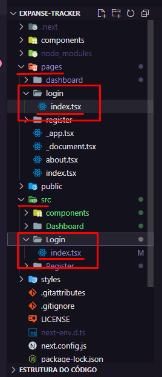
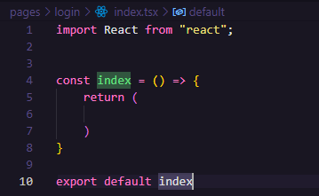
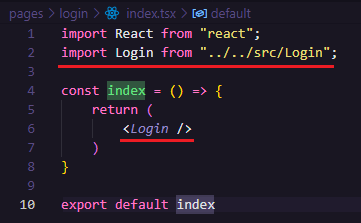
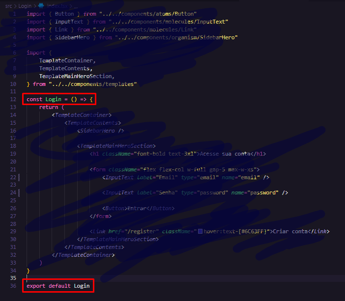

Organizando os arquivos e páginas:
-
A pasta
pagesdo Next, é uma pasta especial e deve estar o mais "limpa" possível. Então, o conteúdo de cada página da Aplicação deve ficar dentro de uma pasta responsável apenas por conteúdos (por convenção ela é chamada desrc), deixando enquanto que a pastapagesvai ficar apenas com um "esqueleto" da nova página. -
Observe que cada nova página criada dentro de
srctem uma pasta com o mesmo nome (mas com letras minúscolas por causa do Next) criada dentro depages.

Relembrando: O conteúdo das páginas estão todos dentro da pastasrcenquanto que a pastapages(do Next) garda apenas o "esqueleto" dessas páginas. -
É importante lembrar que, assim como o
index.html, o arquivo principal de cada página deve ser criado na raíz de sua própria pasta.
Abaixo, vemos que tanto na pastapagesquanto na pastasrc, cada página tem sua própria página e dentro da mesma tem um arquivoindex.tsx.

- Essa é a estrutura/esqueleto de cada página dentro de
pages:

OBS: Use a extensão ES7+ Snippets para criar essa estrutura rapidamente usando o comandorafceourafc. - Esse esqueleto é preenchido com a importação do componente e a chamada do
componente da página.
 - Os códigos ficam dentro de um componente que é exportado por
padrão logo no final da página:

"Esqueleto" >>> pages:
"Conteúdo" >>> src
Resumo:
Dentro de pages tem o "esqueleto das páginas" e dentro da pasta src tem o "conteúdo" das páginas (em forma de componente). Os componentes de src são exportados por padrão e são importados pelos "esqueletos" que estão dentro de pages. Fim.